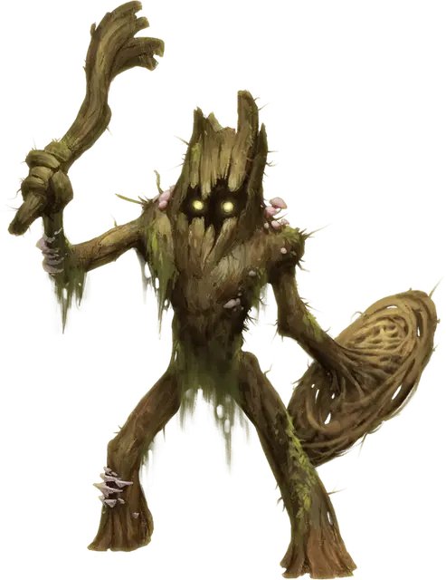

Лесная Вайда
Wood Woad
Среднее Растение, законно-нейтральное

Класс Доспеха 18 (природный доспех, щит)
Хиты 75 (10к8 + 30)
Скорость 30 футов, лазая 30 футов
| мод | спас | ||
|---|---|---|---|
| СИЛ | 18 | +4 | +4 |
| ЛОВ | 12 | +1 | +1 |
| ТЕЛ | 16 | +3 | +3 |
| мод | спас | ||
|---|---|---|---|
| ИНТ | 10 | +0 | +0 |
| МДР | 13 | +1 | +1 |
| ХАР | 8 | −1 | −1 |
Навыки Атлетика +7, Восприятие +4, Скрытность +4
Уязвимость к урону огонь
Сопротивление урону дробящий, колющий
Иммунитет к состояниям очарование, испуг
Чувства тёмное зрение 60 футов, пассивное Восприятие 14
Языки Сильван
Опасность 5 (1800 опыта)
Бонус мастерства +3
Среда обитания Лес
Особенности
Магическая дубинка. . В руках лесной вайды её дубинка магическая и наносит дополнительно 7 (3к4) урона (включено в атаки).
Растительный камуфляж. . Лесная вайда имеет преимущество на проверки Ловкости (Скрытность), которые он совершает в любой местности, достаточно укрытой растительностью.
Регенерация. Лесная вайда восстанавливает 10 хитов в начале своего хода если находится в контакте с землей. Если он получает урон огнём, то эта особенность не работает в начале следующего хода лесной вайды. Она умирает только если начинает ход с 0 хитов и не может регенерировать.
Древесный шаг. . Один раз в каждый ход лесная вайда может потратить 10 футов движения и магически войти в живое дерево в 5 футах от себя и выйти из другого живого дерева, которое она может видеть не далее 60 футов от себя, появляясь на незанятом месте в 5 футах от второго дерева. Оба дерева должны быть Большими или больше.
Действия
Мультиатака. Лесная вайда совершает две атаки своей дубинкой.
Дубинка. . Рукопашная атака оружием: +7 к попаданию, досягаемость 5 футов, одна цель. Попадание: 14 (4к4 + 4) дробящего урона.
Описание
Стойкие стражи, которые разговаривают мало. Лесные Вайды –превосходные соседи. Если только ты не дровосек.
– Эльминстер
Лесная Вайда – могущественное растение, обладающее формой гуманоида, в которое вселилась душа кого–либо, отдавшего жизнь, чтобы стать вечным стражем.
Рожденные Жертвой. Ритуал создания лесной вайды – это первобытный секрет, передающийся из поколения в поколение в диких обществах и кругах темных друидов. Выполнение ритуала это не обязательно злое деяние, если будущая жертва пошла на сделку, которая требует добровольного пожертвования себя. В ритуале пронзается грудь существа и удаляется сердце. После этого в сердце засовывают семя и помещают в дерево. Подойдет любое дупло или пустота, но часто в стволе вырезается специальная полость. После этого дерево омывается и окропляется кровью жертвы, а тело зарывается у его корней. Через три дня из земли у основания появляется росток и быстро вырастает в гуманоидную форму.
Это новое тело, бронированное крепкой корой и снаряженное корявой дубинкой и щитом, сразу же готово выполнять свой долг. Тот, кто проводил ритуал даёт лесной вайде задание, и существо выполняет эти приказы беспрестанно.
Безжалостные Защитники. У лесной вайды дыра там, где должно быть сердце, так же как и своего прежнего тела, зарытого в землю. Те, кто становятся лесными вайдами, обменивают свободную волю и все сентиментальные чувства на сверхъестественную силу и вечный долг. Они существуют только для того, чтобы защищать леса и тех, кто за ними ухаживает. Лицо лесной вайды пустое и без выражения, кроме сгустков света, парящих в глазницах. Лесные вайды мало разговаривают, и пока их не призвали к действию, они прорастают корнями в землю и подпитываются из неё.
Выкорчеванное Бессмертием. Как и дереву, лесной вайде нужен лишь солнечный свет, воздух и питательные вещества из земли чтобы жить. Благодаря своей нежизни, некоторые лесные вайды переживают свою изначальную цель. Место, охраняемое лесными вайдами стражами может потерять свою силу или значение со временем, или те, кто отдавал им приказы могли умереть. Освобожденная от конкретных обязанностей, лесная вайда может бродить в поисках другого места естественной красоты или точки влияния фей, чтобы охранять его.
Лесную вайду привлекают существа, которые близки с природой, которые защищают и уважают землю, такие как друиды и тренты. У некоторых трентов есть слуги лесные вайды, полученные за счет старинных пактов с друидами или феями, которые выполняли ритуал, другие же получают услуги освобожденных лесных вайд, нашедших обновленную цель в охране родственных существ.